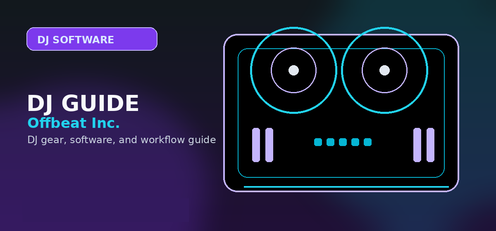

Rekordbox Pro Review 2026: Creative vs. Performance Licensing Tiers Compared
Comprehensive guide to Rekordbox Pro review 2026 licensing tiers Creative vs Performance with practical recommendations and current buying notes — updated 2026.

Disclosure: This page uses affiliate links. We may earn a commission at no extra cost to you. Full disclosure →
In 2026, Rekordbox remains the undisputed industry standard for professional DJs, bridging the gap between home preparation and the club booth. As the ecosystem has evolved, Pioneer DJ has streamlined its licensing into two primary subscription paths: the Creative Tier and the Performance Tier. While the software's core engine remains consistent, the distinction between these tiers now centers on where you play and how much you rely on AI-driven preparation. For the modern DJ, choosing the wrong tier can mean paying for unused pro-grade export tools or, conversely, finding yourself limited when trying to prepare a USB for a high-end CDJ-3000 setup. This review breaks down the costs, features, and value propositions of each tier to help you decide which investment aligns with your career stage and technical requirements.
The Creative Tier: Perfect for the Bedroom DJ
The Creative Tier, priced at $9.99/month or $99/year, is designed for hobbyists, streamers, and those transitioning from controller-based setups to professional software. It provides full access to the DJ mode, allowing users to mix and perform using a computer or compatible controller. The standout feature in 2026 is the enhanced "Basic Stems" integration, which allows for real-time vocal and instrumental isolation—perfect for creating quick mashups during a home session. However, the Creative Tier is limited in its library management capabilities. While you can organize tracks, the advanced analysis tools and high-speed cloud syncing are throttled. It is an ideal entry point for those who don't yet play in clubs and prefer the flexibility of a low-cost subscription over a heavy hardware investment.
The Performance Tier: Built for the Booth
For the working professional, the Performance Tier ($19.99/month or $199/year) is an essential tool. The primary differentiator here is the "Professional Export" suite. This tier unlocks the full power of Rekordbox's database management, allowing for seamless synchronization of playlists, cues, and beatgrids across multiple USB drives. In 2026, this includes "AI-Predictive Analysis," which suggests compatible tracks based on harmonic energy and rhythmic density. Performance users also gain access to "Ultra-Low Latency Cloud Sync," ensuring that changes made on a laptop are instantly reflected on any connected XDJ or CDJ system. If your income depends on reliability and precision in a club environment, the Performance Tier's advanced preparation tools are non-negotiable.
Hardware Unlock: The Best Value Proposition
Many DJs avoid monthly subscriptions entirely through "Hardware Unlock." By purchasing certified Pioneer DJ gear—such as the DDJ-FLX4 for beginners or the DDJ-REV7 for battle-style DJs—you unlock the core "Performance" features for free. In 2026, this remains the most cost-effective route. When a compatible controller is connected, Rekordbox automatically switches to the Performance mode, granting access to the export tools and library management without a recurring fee. The only caveat is that once the hardware is disconnected, the software reverts to a limited free mode. For those who have a dedicated home studio and a consistent set of gear, investing in the hardware upfront eliminates the "subscription fatigue" while providing the same professional toolset.
AI-Driven Workflow and Cloud Integration in 2026
The 2026 version of Rekordbox has leaned heavily into AI and cloud architecture. The "Smart Crate" system now uses machine learning to categorize your library not just by genre, but by "Vibe" and "Energy Level," significantly reducing the time spent on prep. Both the Creative and Performance tiers benefit from the new Cloud Library, but Performance users enjoy higher bandwidth and priority syncing. This allows a DJ to update a playlist in the cloud and have it ready on a USB in seconds. Furthermore, the 2026 AI stem separation has reached a level of transparency where "Performance" users can export stems directly into their library, enabling a new era of live remixing that was previously reserved for DAW-based production.
Licensing Comparison Table
| Feature | Creative Tier | Performance Tier | Hardware Unlock |
|---|---|---|---|
| Monthly Price | $9.99 | $19.99 | Free (with gear) |
| Yearly Price | $99.00 | $199.00 | N/A |
| AI Stems | Basic Real-time | Advanced & Exportable | Advanced |
| USB Export | Limited | Full Professional | Full Professional |
| Cloud Sync | Standard | High-Speed/Priority | Standard |
| Club Ready | No (Controller only) | Yes (CDJ/XDJ) | Yes (CDJ/XDJ) |
| Best For | Hobbyists/Streamers | Touring Professionals | Owner-Operators |
Pros & Cons
✅ Pros
- Best DJ library management tool available
- Hardware Unlock — buy a controller, get free Performance licence
- Automatic Beat Grid, Key Analysis, and Cloud Sync
- Stems feature for DJ remixing and live performance
- Works with Pioneer CDJ players over Pro DJ Link
❌ Cons
- Performance plan $15/month without hardware unlock
- Cloud sync requires subscription
- Rekordbox library not portable to other software (no Traktor export)
- Less flexible than Serato for third-party hardware
Key Specs
Quick Verdict
The standard for professional DJ library management — if you use Pioneer CDJs at clubs, Rekordbox is essential. Musicians playing venues with Pioneer CDJ-3000s should buy Performance plan or a hardware-unlock controller. Shop Pioneer DJ DDJ-FLX4 on Amazon →
Shop on Amazon
Find rekordbox-licensed Pioneer controllers on Amazon — free rekordbox included.
Who Should Buy This?
Rekordbox Pro Review 2026 is the right choice if you want professional-grade quality that will last through years of regular use. It suits DJs who have moved past entry-level gear and need something that can handle club environments and regular touring.
- Ideal for: intermediate to advanced DJs upgrading from a first controller
- Not ideal for: first-time buyers on a tight budget who should start with a more forgiving entry-level option
- Best purchased from: an authorised retailer with warranty coverage
The Rekordbox Ecosystem: Free Tier vs. Paid Subscriptions
Understanding the Rekordbox licensing model is the first step in mastering the software. Unlike competitors that lock core features behind a paywall, Pioneer DJ maintains a robust "Free" tier that remains the industry standard for library management.
1. The Free Tier: The Industry Standard
The Free tier is not a "demo." It is a fully functional library management suite. If you are a club DJ who plays on house-standard CDJ-3000s or XDJ-XZ units, the Free tier is all you need. It allows you to analyze tracks, set hot cues, create memory loops, and export your playlists to a USB drive formatted for Pioneer hardware. If you don't need to DJ directly from your laptop or use DVS, you never have to pay a cent.
2. Paid Tiers: Unlocking Performance
The Core, Creative, and Professional subscriptions are designed for those who perform using a laptop (Controller Mode). These tiers unlock:
- Performance Features: 4-deck mixing, advanced FX packs, and DVS (Digital Vinyl System) support for timecode vinyl.
- Cloud Library Sync: Seamlessly sync your entire library across multiple devices.
- Stem Separation: Real-time track isolation for creative live mashups.
Pro Tip: Check if your hardware qualifies for "Hardware Unlock." Many Pioneer controllers automatically activate the Performance features for free when connected, saving you the monthly subscription fee.
Library Management: The "Prepare, Don't Panic" Workflow
Rekordbox is fundamentally a database manager. The biggest mistake new users make is treating it like a media player rather than a library preparation tool. To ensure a smooth set on professional CDJ-3000s, follow this workflow:
- Analysis: Always run "Track Analysis" on import. Ensure your BPM and Key are set correctly to utilize the CDJ's "Sync" and "Key Shift" functions.
- Grid Correction: For tracks with variable tempos or live drumming, manually adjust the beatgrid. The CDJ-3000 relies on these grids for perfect quantized looping.
- Memory Cues vs. Hot Cues: Use Memory Cues for navigation points (Intro, Drop, Outro) on CDJs, and Hot Cues for performance triggers.
- The Export Workflow: Always "Sync" your playlists to your USB drive using the Export mode. Do not simply drag and drop files; the database file (.pdb) created during sync is what allows the CDJ to display waveforms and search your library.
CDJ/XDJ Connectivity: From Laptop to Booth
Rekordbox is the bridge between your bedroom studio and the festival stage. There are three primary ways to connect your library to Pioneer hardware:
The USB Export Method
This is the gold standard. You export your analyzed library to a FAT32 or exFAT formatted USB. When you plug this into a CDJ-3000, XDJ-RX3, or XDJ-XZ, the player reads the database instantly. You get full search functionality, waveforms, and cue points without ever needing a laptop in the booth.
Pro DJ Link (LAN Connection)
If you are using a laptop, you can connect it to your CDJs via a LAN switch or a direct Ethernet cable. This creates a "Pro DJ Link" network. It allows you to drag tracks directly from your laptop's Rekordbox collection onto the CDJ screens. This is essential for large libraries that won't fit on a single USB drive.
USB/HID Control
By connecting your laptop via USB to a supported player (like the XDJ-XZ), you can use the hardware as a high-end MIDI controller for Rekordbox. This gives you the best of both worlds: the tactile feel of physical jog wheels and the massive software-based library management of Rekordbox.
Frequently Asked Questions
Is Rekordbox Pro worth the subscription?
Rekordbox's free tier handles track preparation (BPM analysis, cue points, playlists) for Pioneer CDJ use. The ~$7.99/month Performance plan is worth it if you need stems, DVS, or streaming integration.
What is the difference between Rekordbox free and paid?
Rekordbox free: full track preparation for CDJ use. Rekordbox Performance ($7.99/month): 4-deck mixing, effects, stems, DVS support, streaming. Creative ($9.99/month) adds video and karaoke features.
Does Rekordbox work without internet?
Yes for DJing — you only need internet for initial activation and streaming features. Your local library, cue points, and playlists work offline. Great for gigging.
Is Rekordbox the best DJ software in 2026?
Rekordbox is the best choice if you use Pioneer CDJs or controllers. Serato DJ Pro is preferred for scratch and hip-hop. Traktor suits electronic music DJs. 'Best' depends on your gear and style.
Can you export Rekordbox playlists to a USB drive?
Yes. Rekordbox's Export mode lets you drag playlists to a USB drive formatted for Pioneer CDJ/XDJ use. This is one of its most valuable features for professional DJs.